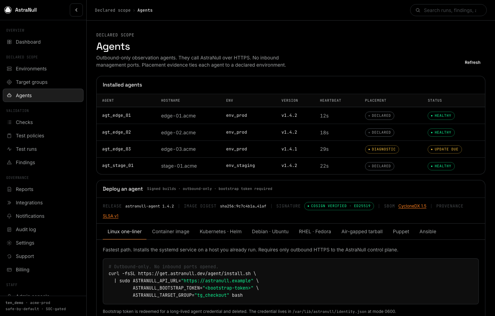
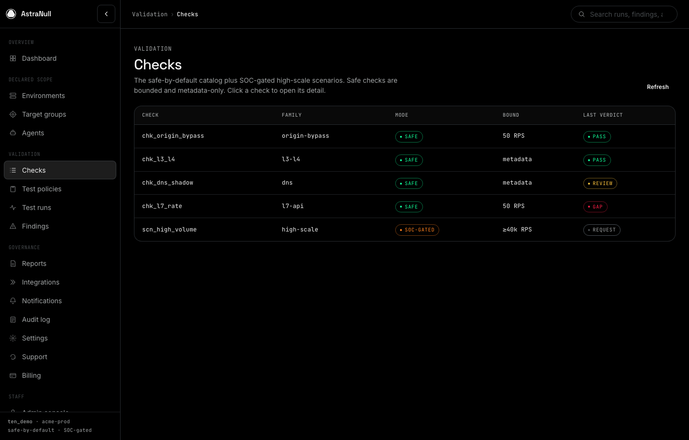
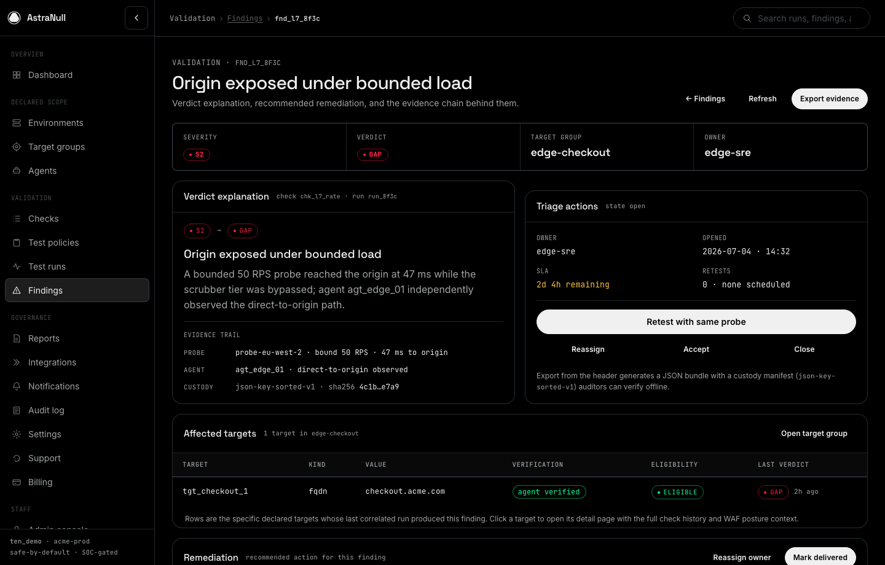

The short pitch
AstraNull is built for enterprises that bought DDoS protection but still need proof that critical services are ready for real pressure, misrouting, bypass attempts, and operational scrutiny.
One-liner: AstraNull proves DDoS readiness for customer-declared targets without requiring cloud credentials, automatic IP discovery, or unsafe self-service traffic generation.
Board version: We help security teams answer a simple question with evidence: if a protected service is targeted, will the right traffic be blocked, will the business path stay healthy, will the SOC know what happened, and can we prove it later?
Practitioner version: Declare the service, bind an outbound-only agent or canary, run safe checks, review probe and agent evidence side by side, fix findings, and retest until the readiness score reflects observed behavior.
What it is used for
The product is not a DDoS mitigation provider. It validates whether the customer's existing protections, routes, runbooks, and evidence processes are actually ready.






Safe validation for critical services
Teams use AstraNull to prove whether declared services are protected as expected, whether agents are placed where they can observe traffic, and whether failed checks have enough evidence to drive remediation.
SOC-gated high-scale workflow
When higher-scale validation is needed, AstraNull becomes the governance workflow: authorization pack, provider approval, preflight, schedule, live SOC control room, stop path, and final evidence report.
Where AstraNull sits in the market
AstraNull overlaps with exposure management and DDoS validation, but its product wedge is narrower and deeper: declared-scope DDoS readiness with inside/outside evidence and safe governance.
IONIX publicly positions around continuous threat exposure management and external attack surface management: discovering, validating, prioritizing, and helping remediate external exposures across the internet-facing estate.
MazeBolt RADAR publicly positions as an independent validation layer for DDoS defenses, continuously and non-disruptively validating protection layers such as scrubbing, CDN, WAF, and CPE.
AstraNull focuses on customer-declared target groups, outbound-only internal observation, safe probes, evidence-backed verdicts, readiness scoring, and SOC-gated high-scale validation.
How it is the same and different
The simplest way to position AstraNull: it shares the validation mindset with both companies, but chooses a different trust model and operating model.
Shared themes
- All three products speak to security teams that want fewer assumptions and more proof.
- All three help prioritize remediation instead of just showing raw technical signals.
- All three are complementary to existing controls such as DDoS protection, WAFs, CDNs, cloud platforms, and SOC workflows.
- AstraNull and MazeBolt both live close to DDoS readiness validation, especially around testing whether deployed defenses work.
- AstraNull and IONIX both care about evidence, prioritization, WAF posture, and externally observable risk.
AstraNull's wedge
- AstraNull does not require default cloud, CDN, WAF, or firewall credentials.
- AstraNull does not make automatic asset discovery the core path. Customers declare the targets to validate.
- AstraNull makes outbound-only agents and canaries part of the primary proof model.
- AstraNull separates safe validation from high-scale simulation, with SOC gating for high-risk work.
- AstraNull's verdicts must trace to observed probe data, agent observations, health signals, approval artifacts, or customer declarations.
Competitive comparison matrix
This matrix uses public positioning for IONIX and MazeBolt, and local AstraNull product scope from this repository. It is intended for pitch and product framing, not legal claims.
| Dimension | AstraNull | IONIX | MazeBolt |
|---|---|---|---|
| Primary category | No-access-first DDoS readiness validation and evidence platform. | External exposure management, CTEM, and attack surface management. | Continuous DDoS defense validation and DDoS vulnerability management. |
| Core buyer question | Can we prove our declared critical services are ready, and can we show the evidence? | What external exposures exist across our internet-facing estate, and which matter most? | Do our deployed DDoS defenses resist known and evolving DDoS vectors without disrupting production? |
| Default scope model | Customer-declared target groups. CSV/API import is allowed, but automatic IP inventory discovery is not required. | Discovery-forward external attack surface coverage, including digital supply chain, subsidiaries, cloud assets, and external dependencies. | DDoS protection surface and attack entry points across live protected services. |
| Access model | No cloud credentials by default. Outbound-only agents and canaries provide internal observations. | Public positioning emphasizes external discovery plus optional integrations with cloud, on-prem, and security solutions for richer validation. | Public positioning emphasizes independent, non-disruptive simulations against deployed DDoS protection layers. |
| Validation approach | Bounded safe probes correlated with agent observation, health signals, logs if configured, and explicit declarations. | Continuous external exposure validation and prioritization of exploitable or business-critical risks. | Continuous non-disruptive DDoS simulations to identify bypass paths, misconfigurations, and remediation needs. |
| DDoS focus | High. DDoS readiness is the main product promise. | Adjacent. Useful for exposed internet risk and WAF posture, but broader than DDoS readiness alone. | Very high. DDoS defense validation is the central category. |
| Internal proof | Core. Strong verdicts depend on what the outbound-only agent or canary observes inside the protected environment. | Not the central public wedge. Public positioning focuses on external attack surface coverage and exposure validation. | Public positioning focuses on defense validation across protection layers. AstraNull differentiates by making customer-side internal observation explicit in the proof model. |
| High-scale governance | High-scale tests are not customer self-serve. SOC approves, schedules, executes or coordinates, monitors, stops, and closes. | Not the primary public positioning. IONIX is oriented around exposure management and remediation workflows. | Public positioning emphasizes continuous non-disruptive testing. AstraNull separately models high-scale work as SOC-gated governance. |
| Evidence output | Verdicts, findings, readiness scores, timeline evidence, audit logs, authorization artifacts, and reports. | Validated exposures, prioritization, ownership context, remediation guidance, and exposure workflow outputs. | DDoS vulnerability findings, remediation insights, revalidation results, and protection-layer visibility. |
| Best-fit positioning | Best when the customer cannot or will not grant cloud access but still needs defensible DDoS readiness proof for declared services. | Best when the problem is broad external exposure discovery, prioritization, and attack surface reduction. | Best when the problem is continuous validation of existing DDoS protection controls against DDoS vectors. |
Buyer guidance
This is the clean talk track for a prospect comparing categories.
You need broad external exposure management
IONIX is the stronger fit if the first problem is finding and prioritizing internet-facing exposures across brands, subsidiaries, cloud assets, WAF posture, and digital supply chain dependencies.
You need established DDoS defense testing
MazeBolt is the closer direct category peer if the first problem is continuous non-disruptive validation of DDoS protections such as scrubbing, CDN, WAF, and CPE.
You need no-access-first proof
AstraNull is the sharper fit when the customer wants declared-scope DDoS readiness, no mandatory credentials, outbound-only internal proof, audit-ready evidence, and SOC-gated high-scale workflow.
Competitive summary: AstraNull should not claim to replace IONIX as an EASM/CTEM platform or MazeBolt as an established DDoS testing platform. The pitch is more precise: AstraNull proves DDoS readiness in environments where trust, access, auditability, and safe governance matter as much as the validation itself.
Source notes
Competitor summaries are based on public product positioning checked on July 7, 2026. AstraNull summaries are based on local product docs in this repository.
- IONIX homepage: public positioning around continuous external exposure detection, CTEM, attack surface visibility, WAF posture, digital supply chain exposure, and prioritization. https://www.ionix.io/
- IONIX exposure management guide: describes the platform as an external exposure management solution focused on reducing external threats and improving remediation speed. IONIX approach to exposure management
- MazeBolt homepage: positions RADAR as an independent validation layer for DDoS defenses across scrubbing, CDN, WAF, and CPE, with non-disruptive continuous testing. https://mazebolt.com/
- MazeBolt on Microsoft Marketplace: describes continuous DDoS simulation for live production services without maintenance windows, plus remediation and revalidation. Microsoft Marketplace listing
- AstraNull local sources:
docs/product/01-platform-overview.md,docs/product/02-scope-and-principles.md, anddocs/product/07-end-to-end-platform-spec.md.